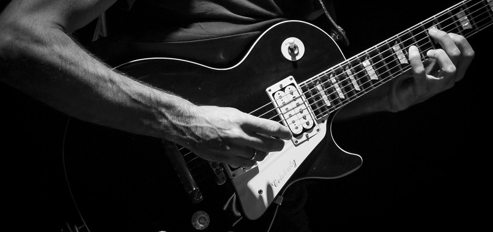

Mi objetivo es potenciar tu música mediante imagenes que dialoguen con las melodías y le aporten una nueva dimensión, manteniendo la personalidad del proyecto.

Te invito a que recorras la página donde vas a encontrar mis trabajos con bandas nacionales e internacionales. Tambien voy a publicar noticias sobre el mundo de la música y la fotografía.